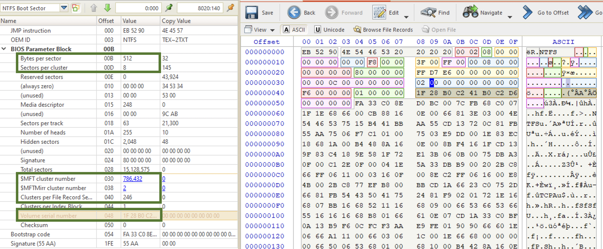
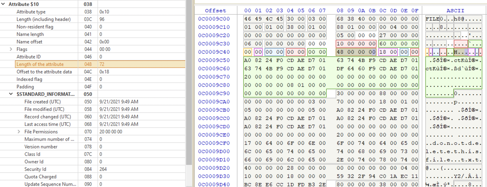
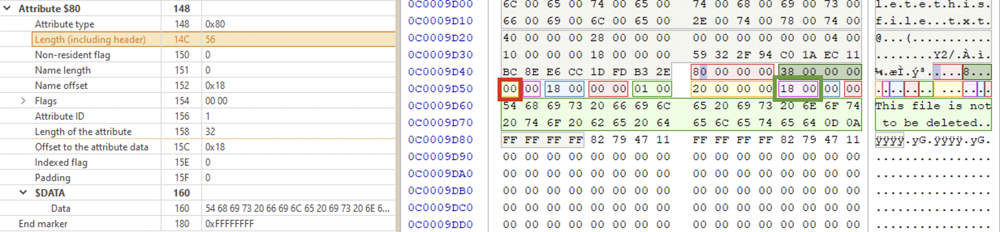
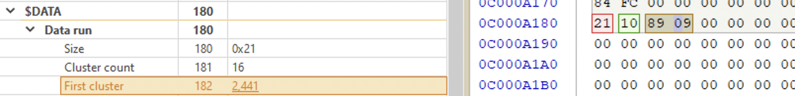
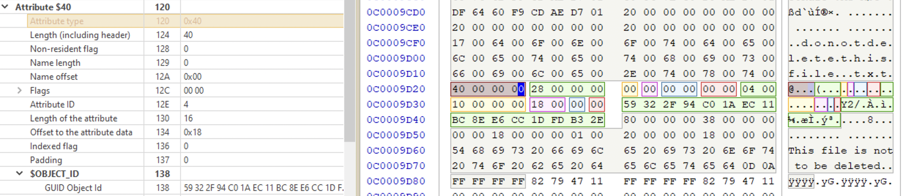

Developed in collaboration with IBM. POSIX compliant. Official docs for NTFS here.
⚠️ Everything is a file!
⚠️ All offsets are relative to the start of the data structures.
Entire logical volume is a data erea (in contrast to FAT where there is a system area as well ❓).
In a Microsoft NT File System (NTFS), hot fixing of disk sectors prevents data from being stored in a bad sector or cluster.
Versions
V1.0
The first release of Windows NT 3.1. Windows XP and above. It allowed for data recovery, rollback (restore the system to the last stable state) and larger volumes. Windows 8 + faster data recovery and cross platform. Windows 10 + extended logging features.
⚠️ Windows Vista and above can obly be installed on a NTFS volume!
V1.2
Windows NT 3.51, included admin controls, compressed files and User Access Control (recycle bin for each user and own account).
\$Recycle.Bin\ ($R&$I)
\RECYCLER
Structure
Volume Boot Record
In the $MFT is represented as $Boot. It’s located at the sector 0 of the volume (not physical disk!). Below is the VBR structure for NTFS. The most important entries for forensic purposes are highlighted.

MFT
The heart ♥️ of NTFS. Created once the disk/volume is formatted with NTFS. It’s an index of every single file on disk (at least 1 entry of a file), including NTFS metadata files (those that start with $). The first 26 records are for the system meta data files. Records 12-23 are reserved. Records 24-26 transaction log and error recovery. The first user-created file is usually at index 35.
Below is the full table of the files [6].
| Inode | Filename | OS | Description |
|---|---|---|---|
| 0 | $MFT | Master File Table - An index of every file | |
| 1 | $MFTMirr | A backup copy of the first 4 records of the MFT | |
| 2 | $LogFile | Transactional logging file | |
| 3 | $Volume | Serial number, creation time, dirty flag | |
| 4 | $AttrDef | Attribute definitions | |
| 5 | . (dot) | Root directory of the disk | |
| 6 | $Bitmap | Contains volume’s cluster map (in-use vs. free) | |
| 7 | $Boot | Boot record of the volume | |
| 8 | $BadClus | Lists bad clusters on the volume | |
| 9 | $Quota | NT | Quota information |
| 9 | $Secure | 2K | Security descriptors used by the volume |
| 10 | $UpCase | Table of uppercase characters used for collating | |
| 11 | $Extend | 2K | A directory: $ObjId, $Quota, $Reparse, $UsnJrnl |
| 12-15 | Unused | Marked as in use but empty | |
| 16-23 | Unused | Marked as unused | |
| Any (25) | $ObjId | 2K | Unique Ids given to every file |
| Any (24) | $Quota | 2K | Quota information |
| Any (26) | $Reparse | 2K | Reparse point information |
| Any | $UsnJrnl | 2K | Journalling of Encryption (usually at /$Extend directory, see above) |
A MFT record contains the following info:
- file allocation status
- file dates
- file name
- location
Records start at index 0 (for the MFT record itself) and the rest are numbered sequencially. Each record is usually 1024 bytes. New records are created on a first-available basis, i.e. if a record was deleted (deallocated) it get overwritten once new one is created and the deallocated one is the first free index in the table.
A file record begins with a header (ASCII FILE or BAAD if it was corrupted). It contains info about the file. It’s made up of attributes. Each of them contains specific information about the file record entry. Each record ends with a 0xFF FF FF FF. It has a sequence numbere at offset 0x10 2 bytes long, that’s incremented each time the file is deleted (not allocated ❗️). At offset 0x16 there is an allocation status flags: 0x00 for deleted file, 0x01 for allocated one, 0x02 for deleted dir, 0x03 for allocated dir.
Following the header, there are four attributes (each consists of a header and contents):
Standard attribute. Starts with 0x10. Standard attribute (file permissions, timestamps, security and admin info). Below is the attribute highlighted. Note, that there are very useful timestamps: file created/modified, record changed and last access time. ⚠️ All UTC.

File name. Starts with 0x30. Also has timestamps, but for the filename. The first 6 bytes are for the parent directory’s MFT record (it’s not a cluster number like in FAT). The timestamps below are for the filename changes, not the changes for the file itself. For the file relevant timestamps see the atrribute 0x10 (above). If the file is resident, its contents will be contained in the MFT itself (see below marked with a yellow rectangle). If the file is too big, there will be a data run instead (❓).

Data attribute. ⚠️ Yes, data is considered an attribute in NTFS. Starts with 0x80. Contains data itself or the pointer to its location (depending on the file size). If the file is small enough, its contents will be here (below, green area). In this case the file is called resident file. Whether it’s a resident file or not, you can determine by the non-resident byte (marked with a red rectangle in the picture below). In the picture below it’s 0x00, which means the file is resident and its contents is in the MFT record (right below). Marked with a green rectangle it’s the offset to the data, for resident files it’s always 0x0018 (little-endian), since the start of the data section is in the attribute itself at the fixed place.

In the picture below there is an example of a record for a bigger file. Its non-resident flag is set to 0x01 (marked with a purple rectangle), meaning the contents is somewhere else on disk. In order to find the file contents location we need to perform the following steps:
- get the offset to data runs, which contain directions to the contents location (pointer). In the picture below it’s
0x0040(little-endian). This offset is relative to the attribute start. So, we count0x40from the attribute start and get to the location marked with a dark-red rectangle:21 10 89 09 00 00 00 00(run list). - read the run list.

Now, what’s a run list?

In the picture below this structure is highlighted on the left and expalined on the right. The first byte is the run header, it tells the number of bytes, occupied by the run list. The second byte tells the length in clusters. The next two bytes are for the starting cluster number (signed 16-bit value). End the remaining 4 bytes of zeroes - end of run.
⚠️ To interpret the run header, split the byte into two nibbles and add them together:
2+1=3, meaning, in the example above the run list length is 3 bytes. The first nibble (2in this example) tells that the size of the first cluster field is 2 bytes. The second nibble tells that the size of the cluster count field of 1 byte (1). Together combined it’s 3. meaning that both cluster count and first cluster fields are 3 bytes long.
If the file is fragmented, there will be more than 1 data run. If there are more than 1 data run, then each next first cluster field is relative to the previous one. For example, if the first cluster for the first fragment in the first data run was 0x42A9 (17065 in decimal), and the next first cluster for the next fragment in the next data run is 0xBFBF (-16449 decimal) then in order to get the first cluster for the second fragment, we would substitute 16449 from 17065 which would give us 616 decimal value, which would be the first cluster of the second fragment [5]. So, each value is relevant to the last piece. To get the first cluster of the next fragment you’d add it’s value to 616 and so on and so forth. Active@Disk Editor does that automatically.
Object ID attribute. Starts with 0x40. This attribute contains a GUID of a file.

Bitmap attribute. Starts with 0xE0?0xB0?. ⁉️
File Creation and Deletion
Creating Files
Steps taken to create a file:
- A file record (
FILE) is created in$MFT - The bitmap for the $MFT is changed to indicate the record is allocated❓
- The record header allocation flag shows it as an allocated file or directory
- Attributes are written to the $MFT file record
- If the data is non-resident, the $BitMap file is updated to represent the clusters allocated to store the data
Go to “Browse File Records” on the top pane, choose the newly created file and see its attributes. The most important are sequence number and flags. I’ve noticed that when I create and delete files several times, the MFT file record remains the same, the sequence number just gets incremented. That’s because NTFS uses the first free record when the file is created. If you know at which sector a resident file was located before deletion, you can view its contents before it gets overwritten. The sector number is shown on the very rightmost bottom pane in Active@Disk Editor:

Deleting Files
Steps taken:
- The record header sequence number (see above) is incremented
- The record header allocation flag indicates a deleted file or dir
- The bitmap for the MFT is changed to show this file/dir is unallocated
- If the data is non-resident, the $BitMap file is updated to indicate the clusters are unallocated
Timestamps
📆 Jan 1, 1601. UTC?
Modified, Accessed, Created, MFT Modified.
Sources: $Standart_Information, $Filename, $I30_Index.
Modified
Created
Accessed
Sometimes this option might be turned off. To check, check the NTFSLastAccessUpdate key at HKEY_LOCAL_MACHINE\SYSTEM\CurrentControlSet\Control\FileSystem in Windows Registry.
Can be changed with fsutils:
fsutil behavior set disablelastaccess [0|1|2|3]
# restart the PC
| Value | Description |
|---|---|
| 0 | User Managed, Last Access Time Updates Enabled |
| ❗️1 | ❗️User Managed, Last Access Time Updates Disabled |
| 2 (default) | System Managed, Last Access Time Updates Enabled |
| 3 | System Managed, Last Access Time Updates Disabled |
Changed
NTFS Metadata
These files cannot be opened from the user space, it’s maintained by NTFS driver. So, even if shown by Directory Snoop, you can’t open it on a live system. You can view the hex data though in DS-NTFS. Another option would be to make a disk image and carve the files. View some more information here [3].
\$Extend\$UsnJrnl
Journal change log for NTFS system. EVERYTHING! File and directory deletion, creation, encryption.
$LogFile
It’s a transaction journal of $MFT. Very similar to $UsnJrnl, but lives less. Tracks file creation, modification, renaming and deletion. May not exist, but since Windows Vista $UsnJrnl is there by default.
References
[1] Windows OS file system for 27 years
[2] Demystifying Mac Investigations: Mac vs. Windows Artifacts Comparison, Magnet Webinar
NTFS file system, Suhanov’s blog: [1] Playing with case-insensitive file names, [2] $STANDARD_INFORMATION vs. $FILE_NAME, [3] Exporting registry hives from a live system, [4] Trim and unallocated space, [5] OneDrive and NTFS last access timestamps, [6] Deceptive NTFS short file names, [7] You write to a logical drive when you read from it, [8] NTFS: large clusters, [9] NTFS: unallocated data marked as allocated, [10] How the $LogFile works?, [11] NTFS today, [12] Hibernation and NTFS, [13] The (in)consistency of last access timestamps, [14] The “Last Access” updates are almost back.
[3] How to acquire “locked” files from a running Windows system, By Pär Österberg Medina
[4] Opening $MFT file causes Access denied even if run as administrator, StackOverflow, answered by Eric Brown
[5] Digital Forensics Specialization, Windows OS Forensics course, InfoSec Institute, Coursera
[6] NTFS Documentation
[7] About FAT32